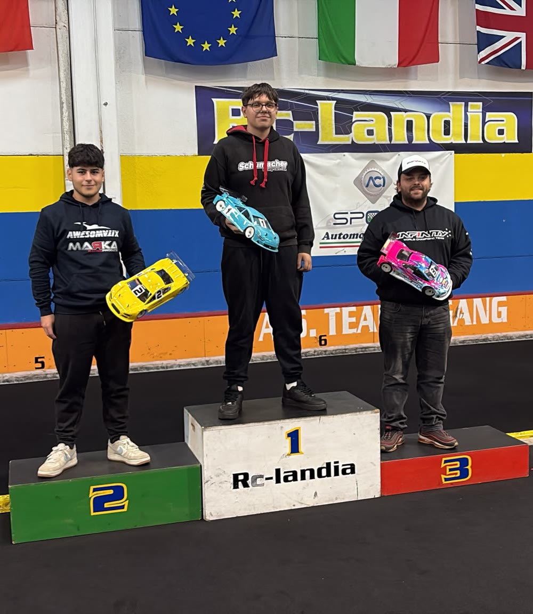

Primo capitolo
La Stock 17.5 debutta nell'Italian Indoor Series con undici piloti e una giornata che vale da subito la classifica. Bruno Rampini la chiude da primo, ma Mattia Ciurlante gli ruba la prima finale all'ultimo respiro.
Per la Stock 17.5 quella di Scandiano è la prima volta in campionato. Undici piloti al via, abbastanza da dividere la categoria in due gruppi e disputare una Finale A e una Finale B, ciascuna su tre manche da cinque minuti. Nessun favorito sulla carta, nessun punto in classifica da difendere: tutto da scrivere.
Il debutto
A scrivere le prime righe è Bruno Rampini. Vince tutte e tre le qualifiche del suo gruppo, sempre con ventitré giri, e nella terza firma il giro più veloce della giornata.
Nell'altro gruppo Carlo Zangrando e Fabio Messina si dividono le vittorie e si guadagnano entrambi un posto in Finale A, dove partono quinto e sesto. Davanti a loro, dietro Rampini, ci sono Ciurlante, Paganucci e Giovannini.
Chi resta fuori a sorpresa è Luca Rampini: nella seconda e nella terza qualifica completa pochi giri e finisce in Finale B. Ci tornerà sopra.
Ore 15:26 · Finale A1
La prima finale è subito un'altra storia rispetto alla mattina. Paganucci si ferma dopo appena due giri: la sua macchina si ferma da sola, senza errori né contatti. Davanti Rampini conduce, con Ciurlante sempre secondo, sempre lì. Al penultimo passaggio, nella curva che immette sul rettilineo, Ciurlante trova lo spazio e passa: c'è una leggera sportellata, quanto basta a far perdere a Rampini l'attimo per rispondere.
Giovannini, scivolato sesto al primo giro, risale fino al terzo posto.
Ore 16:47 · Finale A2
Rampini incassa e risponde nel modo più netto: in testa dal semaforo verde all'ultima curva, senza mai lasciare a Ciurlante un'occasione. Paganucci sale sul terzo gradino. Per Zangrando la manche si complica nei primi due giri: va a sbattere contro un travetto e si ritrova la carrozzeria impigliata sotto le ruote: deve aspettare il commissario.
Ore 18:12 · Finale A3
L'ultima manche è quella dei travetti. Al terzo giro è Ciurlante a pagare la prima curva: la carrozzeria si incastra, serve il commissario e scivola quarto. Rimonta con decisione e all'undicesimo giro è di nuovo secondo. Al nono giro tocca a Giovannini, che colpisce lo stesso travetto con più violenza: la macchina si ribalta, riparte con la carrozzeria fuori posto e alla curva successiva deve fermarsi di nuovo perché un commissario gliela sistemi.
Davanti a tutto questo Rampini non sbaglia niente. Gira da solo in testa e chiude con un giro di vantaggio su tutti. Due finali su tre: la giornata è sua, davanti a Ciurlante e Paganucci. Messina, nella terza, si ferma dopo un solo giro.
La Finale B
Il pilota che non doveva essere lì la trasforma in un monologo. Luca Rampini vince tutte e tre le manche, in testa dal primo giro, e ogni volta chiude con due giri di vantaggio sul secondo. I suoi tempi sul giro sono più rapidi di quelli di metà della Finale A.
Dietro di lui Pederzini è secondo nella prima manche, poi Beggio si prende il secondo posto nelle altre due, mentre Pederzini si ferma prima della fine in entrambe. Pacini, in pole nella B, non prende mai il via.
La prima pagina
Essendo la prima prova, la classifica di giornata è anche quella di campionato: Bruno Rampini in testa, Ciurlante secondo, Paganucci terzo. Una prima pagina scritta in fretta, con una manche persa per meno di un secondo. Le prossime saranno tutte da leggere.
Il podio di giornata

PoleBruno Rampini
- Mattia Ciurlante2
- Bruno Rampini1
- Francesco Paganucci3
Il podio della Finale B

- Tommaso Beggio2
- Luca Rampini1
- Alex Pederzini3
4. Luca Giovannini · 5. Carlo Zangrando · 6. Fabio Messina · 7. Luca Rampini (vincitore Finale B) · 8. Tommaso Beggio · 9. Alex Pederzini · 10. Denis Dal Mas · 11. Daniele Pacini